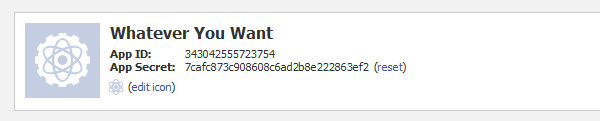
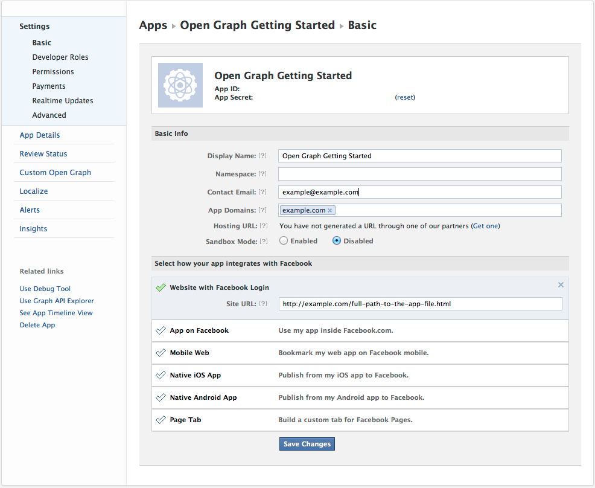
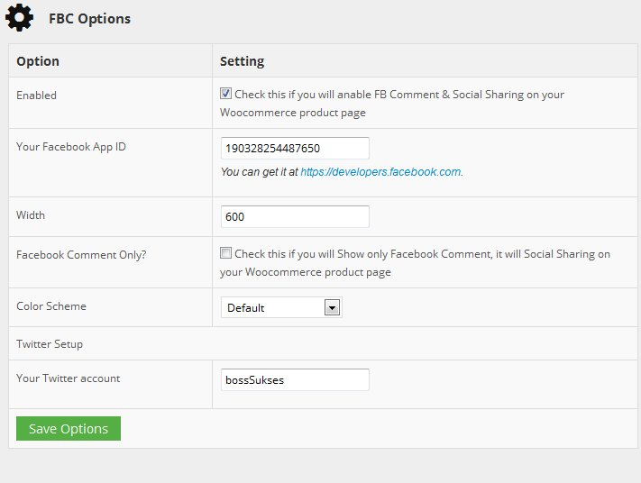

“FB Comment & Share For WooCommerce” Documentation by “Shameem Reza” v1.0.0
“FB Comment & Share For WooCommerce v1.0.0”
Created: 01/11/2013
By: Shameem Reza
Email: support@shameemreza.info
Website: shameemreza.info
Thank you for using my plugins. If you have any questions that are beyond the scope of this help file, please feel free to email via my user page contact form here. Thanks so much!
Table of Contents
- Introduction
- Files In This Project
- How to Install
- Create FB App ID
- Setting up your Plugin
- Sources and Credits
A) Introduction - top
FB Comment & Share For WooCommerce is a wordpress plugin that helps you to integrate commenting system by woocommerce plugin with facebook. It allow your fans/customer review your product throught facebook social media. I also integrated with social share that allow to share your product to Social media, like twitter, gPlus, Linkedin and other.
B) Files In This Project - top
FB Comment & Share For WooCommerce has following folder structure
- index.php (Nothing here)
- fb-comment.php (The main file calling for wordpress installation)
- frontend/* (The file where public user script)
- admin/* (The file where admin user script)
- assets/* (Contain image file, .css and .js)
C) How to Install - top
Installing FB Comment & Share For WooCommerce requires little modification code, no theme modification, and installs as easy as any other plugin.
- You can use wordpress plugin uploader to automaticly install this plugin -OR
- Upload the woocommerce-fb-comment folder to your WordPress plugin directory. ( wp-content/plugins )
- Activate the plugin from your WordPress plugin administration page
- You can now go the Woocommerce -> FBC Settings page to configure it!
D) Create FB App ID - top
There are tutorial to create Facebook API/APP ID.
Before you actually generate the Facebook Comments code and implement it on your blog, you need to create an app for your site.
- Go to developers.facebook.com
- Click Apps
- Click Create New App
- Enter an App Display Name and Namespace

On the next screen, you’ll see your newly created app’s App ID and App Secret Key. You won’t need the secret key, but the App ID will be used later. Take note of it.

Below these keys, go ahead and fill out the Contact Email and App Domain (your blog’s domain). Go down and click on Website. Fill in the same domain that you used for the App Domain. Click Save Changes.

E) Setting up your Plugin - top
To setting your plugin you must login to your admin dashboard.
- Login to your admin dashboard
- Go to Woocommerce -> FBC Settings
- Them you can see setup form
- Fill/change value above suitable with your detail
- Save it!

Once again, thank you so much for using this plugin. As I said at the beginning, I'd be glad to help you if you have any questions relating to this plugin. No guarantees, but I'll do my best to assist.
Shameem Reza